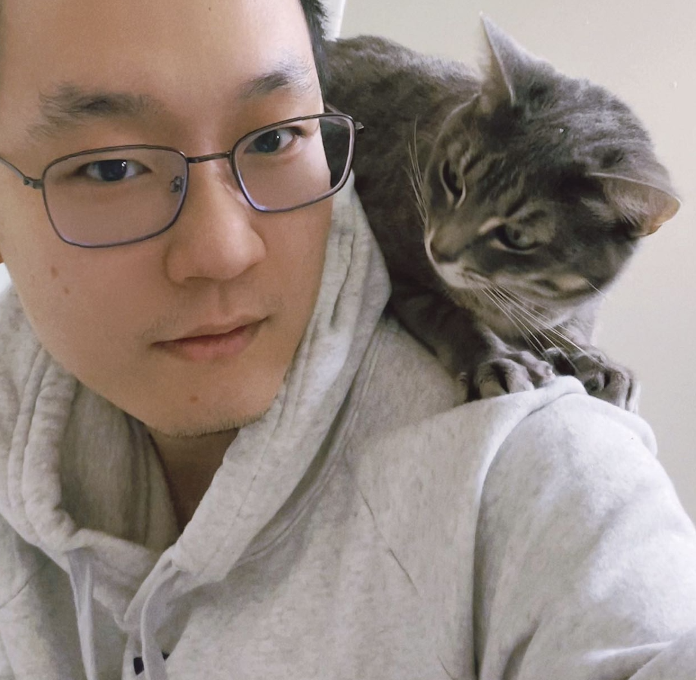

Ph.D. Student, Yale University
chen.liu.cl2482 at yale.edu
New Haven, CT & Mountain View, CA.
 Google Scholar
Google Scholar
 Twitter
Twitter
 LinkedIn
LinkedIn
 GitHub
GitHub
Acknowledgements Many thanks to Zhuang Liu for kindly providing this website template, which was adapted from Zhe Cao's website.
Chen Liu
I am looking for a research internship (Summer 2025). Please let me know if you have opportunities in spatial-temporal modeling, multimodal learning, self-supervised learning, manifold learning, AI in healthcare, or related fields.
I am a Ph.D. student in computer science at Yale University (2022~) advised by Prof. Smita Krishnaswamy. I received my M.S. from Columbia University (2018~2020), and I did my undergraduate studies at a liberal arts college, Bucknell University (2014~2018).
Research Areas At the moment, my research briefly touches the theory and application of machine learning. On the theory side, I help neural networks learn better representations in the latent space, and one of my most recent work focus on modeling spatial-temporal dynamics in irregularly-sampled image series. On the application side, I extend my research to medical imaging, proteomics and other biomedical data.
During the second half of my Ph.D., I would like to endeavor a more specialized direction, which is modeling the spatial-temporal dynamics of complex systems, such as the disease progression revealed in medical images acquired over time.
Experience Prior to my Ph.D., I first served as a full-time research assistant at Columbia University Medical Center (2020) in a medical imaging lab. The next year, I went to the industry and joined a housekeeping robot startup Matic (2021~2021) to develop computer vision and SLAM algorithms. Following that, I worked as a Senior Research Scientist at GE Healthcare (2021~2022), on deep learning in medical imaging applications, where I co-invented 2 patents.
News
[07/2024] I wrote a tool to generate your Google Scholar Citation World Map. [PDF] [Code]
[06/2024] My first project during my Ph.D. was accepted to MICCAI 2024. [Paper] [PDF] [Code] [MICCAI] [Poster]
[08/2022] I started my Ph.D. journey at Krishnaswamy Lab, Yale University.
[06/2022] I was recognized as an Outstanding Reviewer at ICML 2022.
Selected Recent Publications (* equal contribution)

⏳ ImageFlowNet: Forecasting Multiscale Image-Level Trajectories of Disease Progression with Irregularly-Sampled Longitudinal Medical Images
Chen Liu*, Ke Xu*, Liangbo L. Shen, Guillaume Huguet, Zilong Wang, Alexander Tong, Danilo Bzdok, Jay Stewart, Jay C. Wang, Lucian V. Del Priore, Smita Krishnaswamy
arXiv
Conference Papers (* equal contribution)
🎲 Assessing Neural Network Representations During Training Using Noise-Resilient Diffusion Spectral Entropy
Danqi Liao*, Chen Liu*, Benjamin W. Christensen, Alexander Tong, Guillaume Huguet, Guy Wolf, Maximilian Nickel, Ian Adelstein, Smita Krishnaswamy
ICML 2023 Workshop & IEEE CISS 2024
Substituting Gadolinium in Brain MRI Using DeepContrast
Haoran Sun, Xueqing Liu, Xinyang Feng, Chen Liu, Nanyan Zhu, Sabrina J Gjerswold-Selleck, Hong-Jian Wei, Pavan S Upadhyayula, Angeliki Mela, Cheng-Chia Wu, Peter D Canoll, Andrew F Laine, J Thomas Vaughan, Scott A Small, Jia Guo
IEEE ISBI 2020